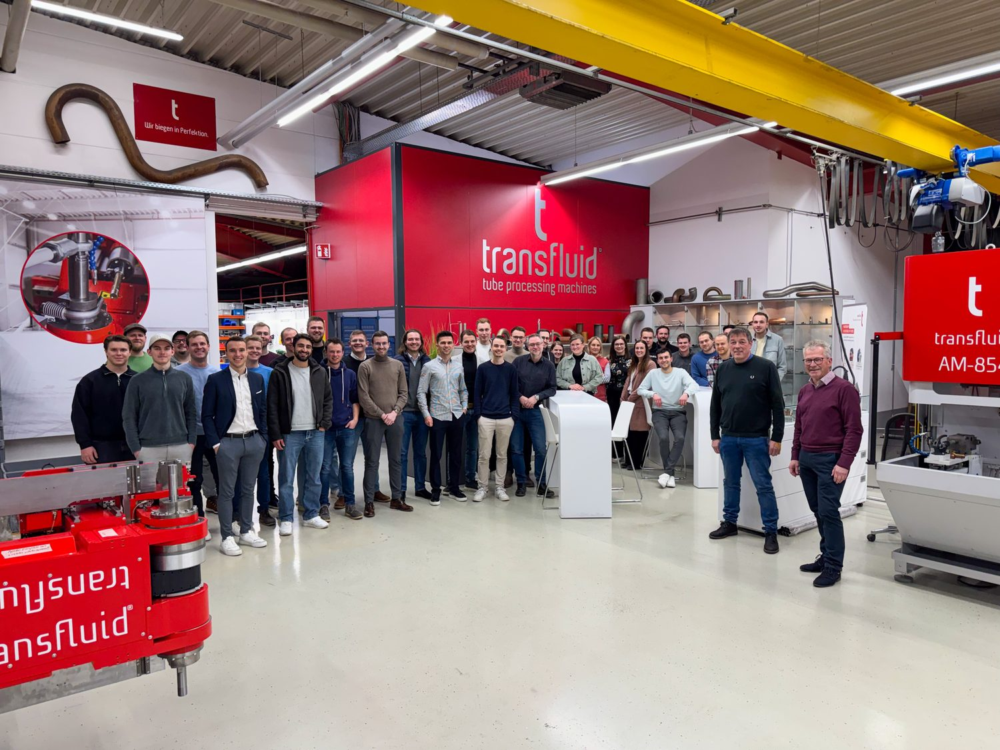

Wer dahinter steckt
 Zur YBS-Webseite
Zur YBS-Webseite
Young Business Schmallenberg e. V. ist ein ehrenamtliches Jungunternehmer-Netzwerk aus dem Schmallenberger Sauerland. Wir treffen uns einmal im Monat bei unterschiedlichen Unternehmen, innerhalb und außerhalb unseres Netzwerks. Bei den Treffen bleibt jeweils nach einer kurzen Unternehmensvorstellung mit Betriebsbesichtigung Zeit für den offenen Teil, in dem man ins Gespräch kommt und sich vernetzt.
Rund 100 Menschen im Netzwerk
Monatliche Treffen in der Region
Seit April 2026 eingetragener Verein
Kein Beitrag, offen für alle
